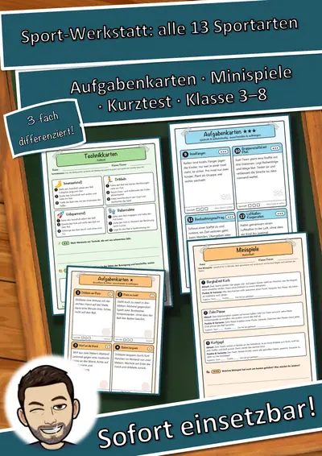
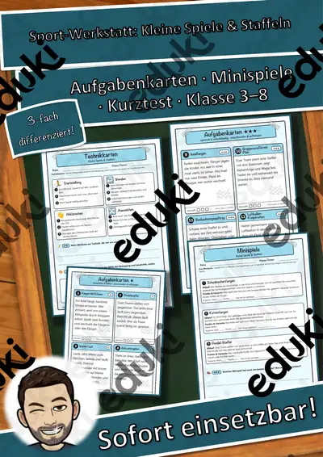
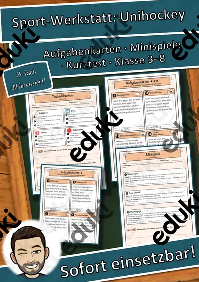
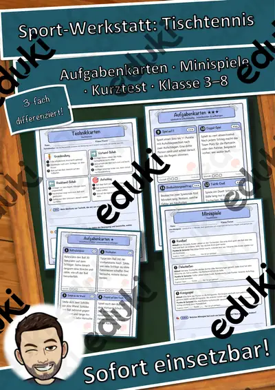

Koordination und Reaktion: 48 Aufgabenkarten Turnhalle
Koordination und Reaktion: 48 Aufgabenkarten Turnhalle (Klasse 1 bis 4)Auf 25 Seiten findet sich alles für eine abwechslungsreiche Koordinationsstunde. Die 48 Aufgabenkarten gibt es zu fünf Bereichen: Gleichgewicht, Reaktion, Rhythmus, Orientierung sowie Auge und Hand. Jede Karte hat einen Titel, eine Materialangabe, einen Ablauf in zwei bis drei kurzen Sätzen sowie eine leichtere und eine schwerere Variante. Drei Niveaus zeigen, wie anspruchsvoll eine Aufgabe ist. Vier Karten stehen auf einer A4-Seite zum Ausschneiden.
Enthalten sind:48 Aufgabenkarten in 3 Niveaus mit Varianten leichter und schwerer- Stationsübersicht und Regelseite für die Kinder- 2 Laufzettel zum Abhaken mit Name, Klasse und Datum- Kartenvorlage für eigene Aufgaben- Urkunde- Lehrerinfo mit Vorbereitung, Sicherheitshinweisen, Materialliste und Auswertung
Geeignet für Stationsarbeit, Zirkel, Aufwärmphase und Vertretungsstunden. Das Material kommt mit einfachem Hallenmaterial aus. Alle Karten sind Eigenentwicklungen, die Illustrationen sind KI-generiert. Das Material ist für Ihre eigene Klasse bestimmt.
Ähnliche Materialien

Die Turnhalle – Ein Tag beim Geräteturnen – Lesespurgeschichte mit Rätselaufgaben (Klasse 5)

Reiz und Reaktion – Lesespurgeschichte mit Rätselaufgaben (Klasse 9)

Die chemische Reaktion – Lesespurgeschichte mit Rätselaufgaben (Klasse 8)

Sport-Werkstatt Gesamtpaket: 13 Sportarten, Aufgabenkarten in 3 Stufen (Klasse 3–8)

Sport-Werkstatt Kleine Spiele & Staffeln: Aufgabenkarten in 3 Stufen & Kurztest (Klasse 3–8)

Sport-Werkstatt Unihockey: Aufgabenkarten in 3 Stufen & Kurztest (Klasse 3–8)
